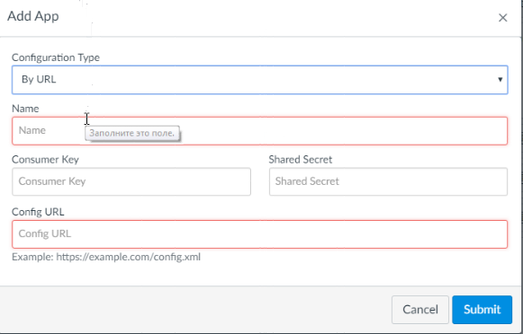
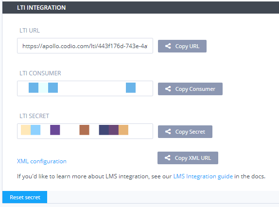
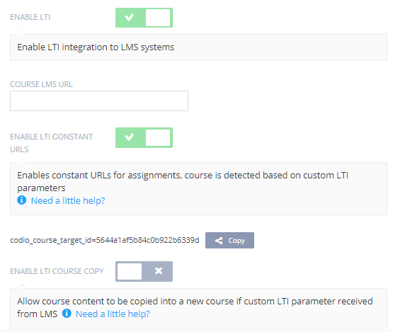
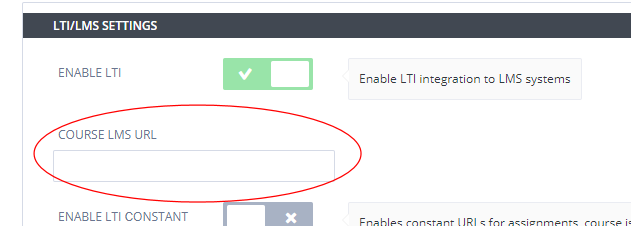
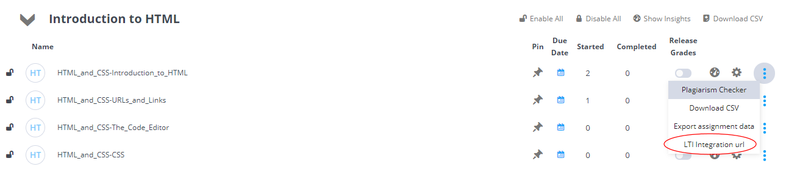

LTI Keys and URLs¶
This page provides an overview of some of the key settings allowing for LTI integration. For more specific directions, access your LMS under system-specific directions.
LTI Constant URLs¶
Enabling this setting enables constant URL for course assignments, course detection will be done based on the custom parameter your LMS should pass.
Constant URL’s allows the transfer of learning content without modifying LTI links and they are also required if you wish to copy Codio courses and LMS Courses. See LTI Course Copy for more on this.
Video - LTI Constant URL:
Note
the screenshots below are for implementation in Canvas but other LMS systems should be similar. Refer to their documentation for more assistance
Create an External app in your LMS using the configuration type: By URL.

Enter in the Consumer Key and Shared Secret from your Codio organization.

Copy the XML URL into the Config URL field.
Submit.
Return to your Codio course and enable the Enable LTI constant URL’s button, and save your changes.
Copy the LTI constant URL’s enabled link.
Note
If your LMS supports it, lis_course_offering_sourcedid is also supported as a unique course identifier so you can replace``codio_class_target_id`` if required. For cases when lis_course_offering_sourcedid is needed for course copy but not available due to privacy settings in Canvas, a custom parameter custom_codio_course_offering_sourcedid=$CourseOffering.sourcedId can be tried.

Return to your LMS external app and ‘edit’.
Paste the LTI constant URL’s enabled link into the Custom Field.
Submit.
LTI Keys¶
LTI Keys are used to integrate your LMS to Codio. These keys are required by your LMS administrator one time only so that Codio can be added as an LTI provider. Once Codio has been added as an LTI provider, you will not need them again and the remaining actions can be completed by LMS users who have Teacher/Instructor permissions. LTI keys are accessible to Codio Organization Owners only.
To find these keys:
1. Go to your organization account settings by clicking on your user name in the bottom left of your dashboard and then selecting your organization within Organizations. 2. Select the LTI Integrations tab. 3. Scroll down to the LTI Integration 1.0 section. You should see the following fields.
Course LMS URL¶
The Course LMS URL is used to map an LMS course to a Codio course. It ensures that Codio knows how to redirect students back to the correct course should they attempt to access the course through the Codio dashboard.
The LMS user who carries out these steps does not need to be a system administrator but must have suitable privileges to edit courses and assignments.
In Codio, go to the LTI/LMS section.
At the top is a switch Enable LTI which you should enable.
Below this is an empty field Course LMS URL. Switch back to your LMS and make sure you are on the Home page of the course. Copy the url in the address bar of your browser to the clipboard and paste it into the above mentioned field in Codio.
Save your changes.

LTI Integration Assignment URLs¶
The Assignment URL is needed to map each individual assignment within your Codio course to the corresponding assignment in your LMS. It directs a student to the correct Codio assignment and will automatically open the Codio assignment.
On the main course screen, click the icon with 3 blue dots for each of the assignments you wish to map and select LTI Integration URL.
You should copy the LTI integration url to the clipboard by clicking on the field (it will auto copy).

Note
The LTI integration URLs for the assignments in a course can be exported. Select the course, go to the LTI/LMS tab, and press the Assignment URLS button and a CSV will download that provides the information for the course in one place.
Complete the mapping in your LMS.